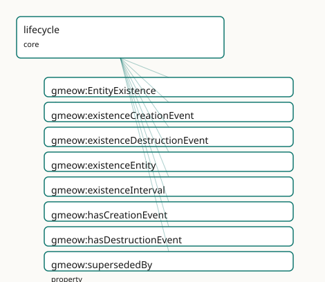

GMEOW Lifecycle Module
- IRI: https://blackcatinformatics.ca/gmeow/slices/lifecycle
- Tier: core
Group: core
What This Slice Covers
This slice owns 8 terms and contributes 8 mapping or projection rows. Use it when its terms match the native fact you want to preserve; use the linkage tables to see how those facts leave GMEOW for consumer vocabularies.
Dependencies
Consumers
- Birth/death and existence events for persons and places across the corpus.
Local Map

Examples
Dissolved Org
- Source:
slices/core/lifecycle/examples/dissolved-org.ttl - GMEOW terms:
gmeow:Event,gmeow:Instant,gmeow:Organization,gmeow:TimeInterval,gmeow:displayable,gmeow:eventTemporalFrame,gmeow:eventTime,gmeow:eventType,gmeow:eventTypeCreation,gmeow:eventTypeDestruction - External prefixes:
xsd
# SPDX-FileCopyrightText: 2026 Blackcat Informatics® Inc. <paudley@blackcatinformatics.ca>
# SPDX-License-Identifier: CC-BY-4.0
#
# Worked example: existence over time, where deletion does not exist . A
# company is founded, then dissolved — but it STAYS in the graph, marked no
# longer extant, because the past is data (Principle 10: destruction is an ontic
# fact, suppression is a display contract, deletion does not exist). The creation
# and destruction events are ordinary gmeow:Events carrying value-typed
# eventTypes (a single occurrence can be both eventTypeDissolution AND
# eventTypeDestruction — co-equal values, never a subclass tower, P9). The
# existence interval bounds the lifespan, and supersededBy points at the
# successor that carried on the work.
@prefix gmeow: <https://blackcatinformatics.ca/gmeow/> .
@prefix ex: <https://blackcatinformatics.ca/gmeow/examples/lifecycle/> .
@prefix rdfs: <http://www.w3.org/2000/01/rdf-schema#> .
@prefix xsd: <http://www.w3.org/2001/XMLSchema#> .
# --- The dissolved company: still here, with its full lifecycle attached.
# Superseded AND no longer extant, so gmeow:displayable false suppresses it
# from default display — the record is retained, never deleted (P10).
ex:meridian a gmeow:Organization ;
gmeow:name "Meridian Systems Ltd."@en ;
gmeow:hasCreationEvent ex:founding ;
gmeow:hasDestructionEvent ex:dissolution ;
gmeow:existenceInterval ex:meridianLife ;
gmeow:supersededBy ex:apex ;
gmeow:displayable false .
# --- Creation: a founding event, value-typed both Founding-as-Creation.
ex:founding a gmeow:Event ;
rdfs:label "incorporation of Meridian Systems"@en ;
gmeow:eventType gmeow:eventTypeCreation ;
gmeow:eventTime "2010-04-01T00:00:00Z"^^xsd:dateTime ;
gmeow:eventTemporalFrame gmeow:temporalFrameUTCGregorian .
# --- Destruction: ONE occurrence carrying two co-equal eventType values.
ex:dissolution a gmeow:Event ;
rdfs:label "dissolution of Meridian Systems"@en ;
gmeow:eventType gmeow:eventTypeDissolution , gmeow:eventTypeDestruction ;
gmeow:eventTime "2024-11-30T00:00:00Z"^^xsd:dateTime ;
gmeow:eventTemporalFrame gmeow:temporalFrameUTCGregorian .
# --- The existence interval (the lifespan), bounded by framed instants.
ex:meridianLife a gmeow:TimeInterval ;
gmeow:hasStartInstant ex:lifeBegin ;
gmeow:hasEndInstant ex:lifeEnd ;
gmeow:hasTemporalFrame gmeow:temporalFrameUTCGregorian .
ex:lifeBegin a gmeow:Instant ;
gmeow:instantValue "2010-04-01T00:00:00Z"^^xsd:dateTime ;
gmeow:inTemporalFrame gmeow:temporalFrameUTCGregorian .
ex:lifeEnd a gmeow:Instant ;
gmeow:instantValue "2024-11-30T00:00:00Z"^^xsd:dateTime ;
gmeow:inTemporalFrame gmeow:temporalFrameUTCGregorian .
# --- The successor, still extant, that superseded Meridian.
ex:apex a gmeow:Organization ;
gmeow:name "Apex Systems Inc."@en ;
gmeow:hasCreationEvent ex:apexFounding .
ex:apexFounding a gmeow:Event ;
rdfs:label "incorporation of Apex Systems"@en ;
gmeow:eventType gmeow:eventTypeCreation ;
gmeow:eventTime "2024-12-01T00:00:00Z"^^xsd:dateTime ;
gmeow:eventTemporalFrame gmeow:temporalFrameUTCGregorian .
Terms
Classes
| Term | Label | Definition |
|---|---|---|
gmeow:EntityExistence |
Entity Existence | The reified, time-scoped fact that an entity existed over an interval — a gufo:Situation that carries its period via gmeow:duringInterval (inherited from TimeS... |
Properties
| Term | Label | Definition |
|---|---|---|
gmeow:existenceCreationEvent |
existence creation event | The creation event associated with this existence record. Optional: an EntityExistence may record only an interval when the creation event is unknown. |
gmeow:existenceDestructionEvent |
existence destruction event | The destruction event associated with this existence record. Optional: an EntityExistence for a still-extant entity has no destruction event. |
gmeow:existenceEntity |
existence entity | The entity whose existence is recorded by this EntityExistence. Functional: an EntityExistence concerns exactly one entity (constitutive of the situation's ide... |
gmeow:existenceInterval |
existence interval | The time interval over which an entity exists. Open-ended (no end instant) when the entity is still extant. Non-functional: in a multi-source merge, different... |
gmeow:hasCreationEvent |
has creation event | Links an entity to the event that brought it into existence — the general form of birth (person), founding (organization), minting (currency), or realization (... |
gmeow:hasDestructionEvent |
has destruction event | Links an entity to the event that ended its existence — the general form of death (person), dissolution (organization), destruction (place), or retirement (fra... |
gmeow:supersededBy |
superseded by | Links an entity to the entity that replaced it — Constantinople supersededBy Istanbul, the Soviet Union supersededBy the Russian Federation, a deprecated softw... |
Linkages
- Rows: 8
- Projection profiles:
dcterms,oai_dc,schema-org - External vocabularies:
dc,dcterms,prov,schema,wdt
| Source | Kind | Profile | Predicate/Relation | Target | Evidence |
|---|---|---|---|---|---|
gmeow:hasCreationEvent |
equivalence | - |
skos:closeMatch | prov:wasGeneratedBy | gmeow-lifecycle.sssom.tsv; gmeow:eqLifecycle001; confidence 0.9 |
gmeow:hasDestructionEvent |
equivalence | - |
skos:closeMatch | prov:wasInvalidatedBy | gmeow-lifecycle.sssom.tsv; gmeow:eqLifecycle002; confidence 0.9 |
gmeow:supersededBy |
equivalence | - |
skos:closeMatch | dcterms:isReplacedBy | gmeow-dublin-core.sssom.tsv; gmeow:eqDcTerms020; confidence 0.85 |
gmeow:supersededBy |
equivalence | - |
skos:closeMatch | wdt:P1366 | gmeow-lifecycle.sssom.tsv; gmeow:eqLifecycle004; confidence 0.9 |
gmeow:hasCreationEvent |
projection | schema-org |
projects to / <= | schema:foundingDate | gmeow:mapSchemaFoundingDate; confidence 0.9; lossy: the creation event's place, participants, and standpoint are dropped; only the instant survives as schema:foundingDate |
gmeow:hasDestructionEvent |
projection | schema-org |
projects to / <= | schema:dissolutionDate | gmeow:mapSchemaDissolutionDate; confidence 0.9; lossy: the destruction event's place, participants, and standpoint are dropped; only the instant survives as schema:dissolutionDate |
gmeow:supersededBy |
projection | dcterms |
projects to / = | dcterms:isReplacedBy | gmeow:mapDctermsIsReplacedBy; confidence 0.85 |
gmeow:supersededBy |
projection | oai_dc |
projects to / <= | dc:relation | gmeow:mapOaiDcIsReplacedBy; confidence 0.7; lossy: all relation refinements collapse to dc:relation |
Guide
Lifecycle — existence over time, for anything
Slice:
https://blackcatinformatics.ca/gmeow/slices/lifecycle· tier: core Birth, founding, minting, death, dissolution, retirement — one facility for the existence of every entity.
Universal time-bounded existence facility: ontic existence-over-time for any gmeow:Entity, distinct from suppression (a display contract). Every entity may carry creation and destruction events, an existence interval, and supersession links. Revised forward, never deleted (Principle 10). Reuses the events module (gmeow:Event + EventType value vocabulary), the temporal module (TimeInterval / TimeScopedRelation / validFrom / validUntil), and the standpoint module (accordingTo / contested claims). Flat-first, reify on demand.
The slice draws one line hard: destruction is an ontic fact; suppression is a display
contract; deletion does not exist. A dissolved organization, a demolished place, a
retired reference frame — all remain in the graph, marked as no longer extant, because
the past is data (Principle 10). And because the model is event-typed by value
(Principle 9), no per-kind machinery is minted: a person's birth event is the same
gmeow:Event carrying both gmeow:eventTypeBirth and gmeow:eventTypeCreation —
co-equal values on one occurrence, never a subclass tower.
Flat-first governs the shape: the three direct hooks below cover the 80 % case; the
reified gmeow:EntityExistence is the promotion target when the existence claim itself
needs identity — contested bounds, attached evidence, standpoint indexing.
The flat hooks (the 80 % case)
gmeow:hasCreationEvent
Links any entity to the event that brought it into existence — the general form of
birth (person), founding (organization), minting (currency), or realization (reference
frame). Non-functional: competing standpoint-indexed creation claims coexist, none
privileged. The event side carries gmeow:eventTypeCreation (events slice), alongside
any more specific value such as gmeow:eventTypeBirth.
gmeow:hasDestructionEvent
The mirror: the event that ended the entity's existence — death, dissolution,
destruction, retirement. Non-functional for the same standpoint reasons. Destruction is
ontic; it never implies gmeow:displayable false, and gmeow:displayable false never
implies destruction.
gmeow:existenceInterval
The entity's span of existence as a gmeow:TimeInterval (temporal slice) — open-ended
(no end instant) while the entity is extant. Non-functional: in a multi-source merge,
different sources give different bounds, and those claims coexist as standpoint-indexed
statements. The interval carries its frame per Principle 11.
gmeow:supersededBy
Links an entity to the entity that replaced it — Constantinople supersededBy
Istanbul, a deprecated release supersededBy its successor. The declared inverse of
the coreference slice's gmeow:supersedes; directional, never symmetric. The
superseded entity is retained (Principle 10) and may carry gmeow:displayable false;
the replacement itself may be recorded as an event typed
gmeow:eventTypeSupersession when it needs a date or participants.
The reified form (promote on demand)
gmeow:EntityExistence
The time-scoped fact that an entity existed over an interval — a gufo:Situation
specializing gmeow:TimeScopedRelation, carrying its period via
gmeow:duringInterval. Promote here when the existence claim is contested (two
sources disagree on when a place ceased), when evidence must attach to the claim
itself, or when standpoint indexing is needed. Open-world EL axioms require some
gmeow:existenceEntity; the closed-world "exactly one" is SHACL's
(EntityExistenceHasEntityShape).
gmeow:existenceEntity
The functional post: exactly one entity per existence record — constitutive of the situation's identity.
gmeow:existenceCreationEvent · gmeow:existenceDestructionEvent
Optional event hooks on the reified record: an EntityExistence may record only an
interval when the creation event is unknown, and a still-extant entity's record simply
has no destruction event. Absence of an end is a statement about the world, not a gap
in the data.
Solver layer & alignment
Existence consistency — creation precedes destruction, the interval brackets both, participation does not outlive the participant — is gate and solver work (Principle 12): the slice asserts the claims; verification queries and the temporal solver check their coherence on the reasoned graph. No external lifecycle vocabulary is imported; the facility is expressed entirely through the events, temporal, and standpoint machinery it reuses, with bridges riding those slices' alignments (Principle 5).
Dependencies
Depends on kernel, coreference (supersedes), events (Event + the
creation/destruction/supersession type values), and temporal (TimeInterval,
TimeScopedRelation, the statement clocks). Consumed by birth/death and existence
claims for persons, places, organizations, and artifacts across the corpus.